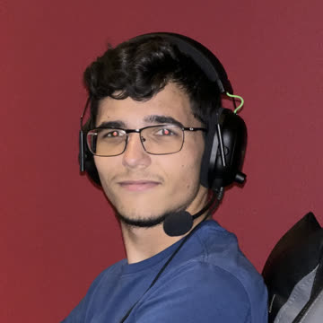
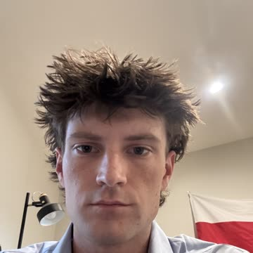

L.I.V.E.
Lung Internal Visualization Engine — an autonomous robotic stethoscope that records, maps, and helps diagnose lung sounds.
The Problem
Respiratory disease is diagnosed largely through manual auscultation — a clinician listening with a stethoscope and relying on subjective judgment and experience. This makes lung sound assessment inconsistent between providers, hard to document over time, and difficult to monitor remotely.
There is no standardized, repeatable way to capture lung sounds across the whole chest and compare them over time or between patients. A physician typically listens at a handful of points, for a few seconds each, and records only written impressions — not the underlying audio. That leaves no objective record to revisit, share with a specialist, or run through automated analysis. L.I.V.E. is motivated by closing that gap: giving clinicians a consistent, automated, and data-driven way to capture and interpret lung sounds.
Goals & Approach
L.I.V.E. is a robotic system that automates auscultation: it drives a stethoscope to a series of defined points across the chest, presses it against the body, and records lung sounds at each location for a standardized 20 seconds. Those recordings are streamed through a Raspberry Pi, compared against a database of known lung sounds, and turned into a visual map of lung health — a diagnostic aid for the physician, not the patient.
- Design and build the robot chassis and mechanism that moves the stethoscope across the body and presses it firmly against the chest at each recording point.
- Mount and connect a stethoscope to a Raspberry Pi to capture clean audio at each point.
- Record 20 seconds of audio at each specified point on the body, covering all major lung fields.
- Build a database of reference lung sounds (normal and abnormal) to compare recordings against and detect anomalies.
- Generate a 2D, color-coded visualization of the lungs from the recorded data, highlighting the location and likely type of any detected issue.
- Work toward a 3D visualization as a stretch goal, giving physicians a fuller spatial map of lung condition.
Features & Functionality
Robotic Positioning
A robot moves the stethoscope across the body and presses it against the chest at each specified auscultation point, automating what a clinician would otherwise do by hand.
Multi-Point Recording
Capture 20 seconds of lung sound audio at each chest location through a stethoscope connected to a Raspberry Pi, building a complete acoustic picture of the lungs.
Lung Sound Mapping
Visualize recordings as a color-coded 2D map overlaying the lung structure, with a 3D visualization planned as a longer-term goal.
Abnormality Detection
Compare recordings against a database of known lung sounds to automatically flag wheezes, crackles, and other abnormal patterns.
Localized Diagnosis
Identify not just that an issue exists, but which part of the lung it's coming from — giving physicians a targeted starting point for further evaluation.
Current Status
L.I.V.E. is in its early build phase. Below are the milestones the team is working through as the robot takes shape.
- Milestone 1 — Procure the robot and attach the stethoscope, then get the robot following a set path.
- Milestone 2 — Get the robot moving properly across the skin.
- Milestone 3 — Get the robot properly placing the stethoscope for the specified amount of time at each specified location.
Our Team
Ethan Van Brunt
Team Lead
evanbrunt2023@my.fit.edu

Jacob Carton
Data Lead
jcarton2023@my.fit.edu
Santiago Raigoza
Software Lead
sraigoza2023@my.fit.edu

Connor Shanley
Hardware Lead
cshanley2023@my.fit.edu
Faculty Advisor
Dr. Silaghi
Department of Electrical Engineering and Computer Science
msilaghi@fit.edu
Client & Sponsor
Dr. Silaghi
This project was requested by Dr. Silaghi, with the eventual goal of putting L.I.V.E. into the hands of medical practitioners as a diagnostic aid.
Demos & Media
[Caption — e.g. "Prototype v1 walkthrough"]
[Caption — e.g. "Sample recorded lung sound waveform"]
Contact
Have questions about the project or interested in collaborating? Reach out using the links below.
- Email: evanbrunt2023@my.fit.edu
- GitHub: github.com/santi-raigoza/LIVE
- University Department: College of Engineering and Science — Student Design & Research